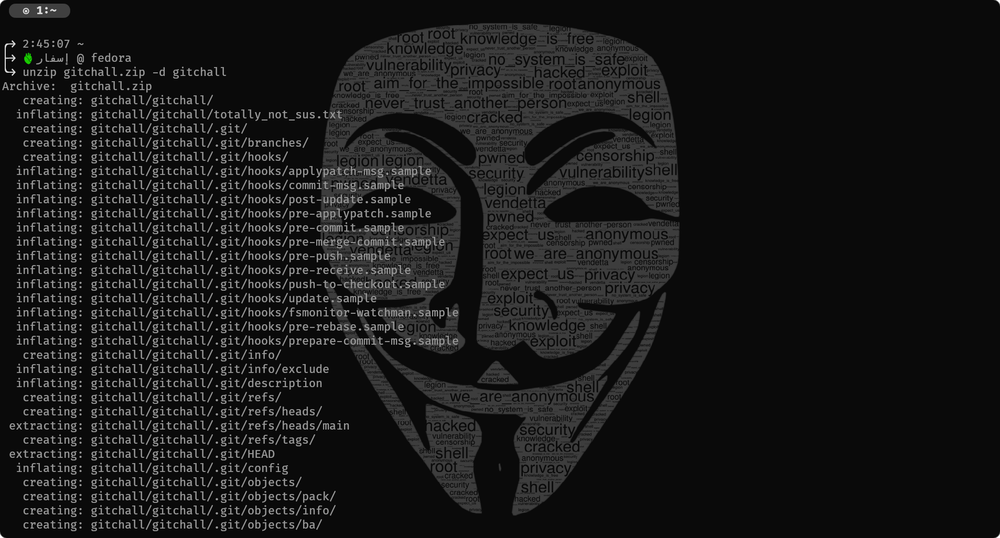
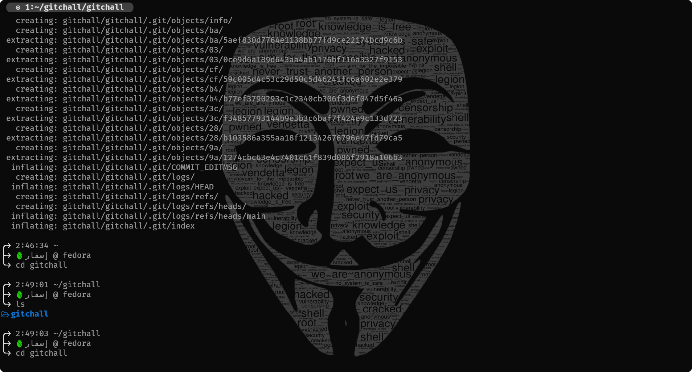
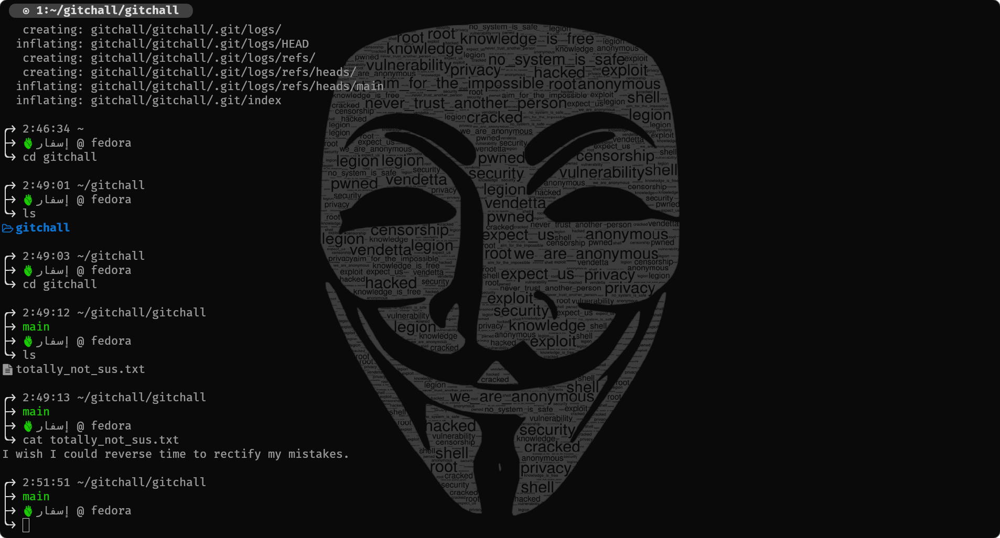
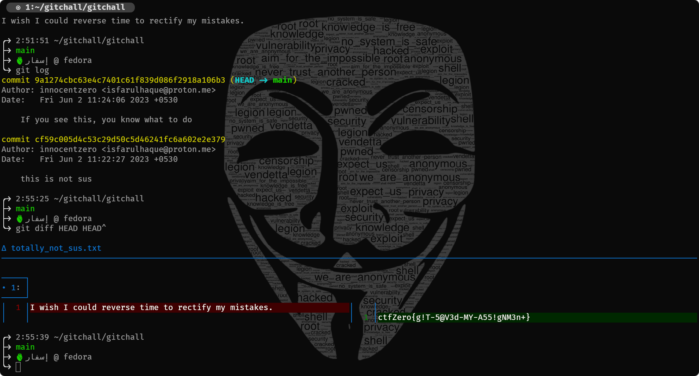

W3£c0m3, 533K3r 0f 7ru7#
Caesar Salad
The typical format of flags in this contest was ctfZero{leet-speak}. Going by the same format, we can quickly observe that the ROT cipher shift in this question was 14. Alternatively, we can also write a simple python script to brute-force ROT cipher decryption.
#!/usr/bin/python3
string = input("Enter encrypted string:\n")
for i in range(1, 26):
decrypt = ""
for j in string:
decrypt += chr(ord("a") + (ord(j) - ord("a") + i) % 26)
print("shift: " + str(i) + " decrypted string: " + decrypt)
XOR everything, shouldn't you?
The title gives you the hint that you need to xor all the values. But of what? Well, the lowercase alphabet, since that's what is mentioned in the challenge message. And obviously, the values being XOR'ed are the ASCII values of the characters we take.
Here is a simple script in python to do this, though you can do it on paper as well (:
#! /usr/bin/python3
from string import ascii_lowercase
num = 0
for i in ascii_lowercase:
num = num ^ ord(i)
print(num)
I'm committed, or am I?
The included zip folder is actually a git repository. Git is a popular version control system. Read more about it here. Windows users can download git from here. Nearly all standard Linux distributions have git preinstalled.
The following steps are for accessing the contents from the terminal (these are steps for linux, you can find equivalent commands for windows as well).
- Open the directory in which the zipped folder is downloaded. 
- Navigate to the folder. 
- On reading the contents of the file, we find that the user wants to get an older version of the file.
- Since the challenge name has commit, and the folder name is gitchall, he is obviously referring to the git commits of the repository. 
- On checking for the changes in the files between the two commits, we find the flag. 
ASCII Wonders!
The easiest way to do it is manually converting heaxdecimal to binary using any of the numerous tools available online.
Alternatively, this shell script also does the job.
#/usr/bin/sh
var="63 74 66 5A 65 72 6F 7B 4C 69 6E 75 73 5F 54 6F 72 76 61 6C 64 73 5F 4F 50 7D"
var="$(echo "$var" | tr -d ' ')"
var="$(tr 'A-Z' 'a-z' <<< $var)"
xxd -r -p - <<< $var
XOR Encryption
Googling about XOR encryption reveals that you bitwise XOR each letter of a key with the letter of the secret and then take the resultant ASCII as your encrypted secret.
An interesting property about XOR is that if A ^ B = C then A ^ C = B.
This implies that you can get the encoding key if you get the plaintext message and the encrypted message.
Here is a simple python script that does the job
#!/usr/bin/python3
def xor(string1, string2):
return_val = ""
if len(string1) == len(string2):
for i in range(len(string1)):
return_val += chr(ord(string1[i]) ^ ord(string2[i]))
return return_val
return None
message = "ctfZero{not_the_key}"
encoded = "%RV($Q/^KE5iAT8-CIA%"
key = xor(message, encoded)
final_encoded = "%RV($Q/^QE5WYP$-[YK%"
print(xor(key, final_encoded))
The Two Columns
The given directory is again a git repository. However, it only gives you a hint if you check the previous commit. The zip name is exclusive_chall.zip. As we did in I'm Committed, or am I?, we unzip the git repo and navigate to the required file.
We need to XOR the two columns one by one to get the required ASCII values of the flag. Here is a simple sheel script to do that.
#!/usr/bin/python3
file1 = open("trashhed", "r")
lines = file1.readlines()
flag = ""
for line in lines:
val = [int(x) for x in line.split(" ")]
flag += chr(val[0] ^ val[1])
print(flag)
A different one
Atbash is the cipher that was originally used in hebrew. Once again, you can do it by hand.
Here is a simple python script to do it.
#!/usr/bin/python3
from string import ascii_lowercase as lowercase
from string import ascii_uppercase as uppercase
string = input("Enter the string: ")
decrypt = ""
for i in string:
if i in uppercase:
decrypt += uppercase[-1 * uppercase.index(i) - 1]
elif i in lowercase:
decrypt += lowercase[-1 * lowercase.index(i) - 1]
print(decrypt)
A tough nut
Over here, the bold letters when entered into a ROT13 cipher give the key that that is used for decrypting the vigenere cipher encrypted with that key.
A python script to do the job.
#!/usr/bin/python3
from string import ascii_letters
def vigenere_decode(key, encryption):
decrypt = ""
key = key.lower()
encryption = encryption.lower()
for i in range(len(encryption)):
if encryption[i] in ascii_letters:
decrypt += chr(
(ord(encryption[i]) - ord(key[i % len(key)])) % 26 + ord("a")
)
else:
decrypt += encryption[i]
return decrypt
print(vigenere_decode("lemon", "LXFOPVEFRNHR"))
Random file
Check the magic bytes of the file if you are on Windows. Then append the required extension for filetype. In this case it was mp4. This lets you play it in any media player. The flag is in the video.
JPEG Image
Read the bytes of the file using frhed for windows and hexdump / xxd commands on linux.
You will find a plaintext comment in the image bytes that gives you the flag.
File Size
Does this really need an explanation?
Really a Text File?
The magic bytes of the file are corrupted. The file is actually a JPEG with the first few bytes set as 00. When the file is opened with notepad or any other text editor, you can see the word JFIF in it. THis is the ASCII representation of the magic bytes of a jpg file. Correct the magic bytes and view it in an image viewer.
QR Mania
Scan the QR code to get the first half of the flag. The second half of the flag is hidden in the image bytes. This can be noticed by the fact that the size of the QR code is very large (almost 6.6 MB).
ATM
Brute force the pin. On linux it can be done with
for i in $(seq 1 10000); do ./atm.out "$i"; done | grep -v "Wrong"
You can install Windows Subsystem for Linux using these steps. This gives you access to most Linux command line options.
Beat the System
Here is the python code that was running behind the binary
import time
num = int(input("Enter a number to beat the system:"))
while num < 99999999999999999999999999999999999999999999999999999999 and num > 0:
print("Welp, looks like you're stuck here")
num += 0.05
time.sleep(2)
print("Flag: ctfZero{0verruL3_T#3_$ys+3m}")
So this basically wanted you to overflow the integer to make it a negative number. This can be used in situations to override an entire section of code in a binary and skip crucial instructions from happening, making the binary crash.
Challenge 1
As demonstrated in the session, sometimes the html source and the css files have comments in them that can reveal crucial information. In this case, half of the flag was hidden in the HTML source code and the other half was in the css files for the website.
Challenge 2
Since the question statement asks us to not behave like a bot, this must be something related to how bots on the internet work.
The traffic on the website was being generated by google. Google is a web crawler. To reduce the traffic you have to forbid a web crawler to read certain directories and files on your server. THis is achieved through a robots.txt file on the server that tells the web crawler what it is allowed to visit and what it isn't.
On reading robots.txt, you will find the directories that are hidden. Visiting those directories and files gives you the flag.